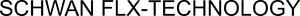

Trade Mark Journal No.2026/003 16 January 2026
WO0000001893080 (1,3,17)
Office of origin: Germany
Date of International Registration:12 September 2025
Date of designation in the UK:
12 September 2025

International priority date claimed: 14 March 2025
(Germany)
- Class 1
- Additives (chemical -) for use in plastics; additives (chemical and organic) for use in plastic; additives (chemical and organic) for use in the processing of plastic; additives (chemical -) for plastics; additives (chemical -) for the flow control of plastics; additives (chemical -) for use in the processing of plastics; wood flour for use as a filler in the manufacture of plastics; raw plastics in the form of liquids; unprocessed plastics for industrial use; unprocessed plastics in all forms; plastics in the form of chips; plastics in the form of liquids; plastics in the form of liquids [for use in industry]; plastics in the form of granules; plastics in the form of granules for use in industry; raw plastics in the form of granules; plastics in the form of pellets; raw plastics in the form of pellets; plastics in the form of foam; unprocessed plastics of natural origin; plastics in the form of masses; unprocessed plastics; unprocessed plastics [plastics in the primary form]; water-insoluble plastics.
- Class 3
- Cover sticks; liquid eyeliners; cosmetic eye pencils; eyebrow mascara; eye pencils; eyeliner pencils; liners [cosmetics] for the eyes; eyeliner; mascara; eyebrow powder; long-lash mascaras; eye make-up; make-up for the face; skin make-up; multifunctional make-up; make-up pencils; eyebrow pencils; eyelid pencils; creamy rouge; cosmetic pencils; lipsticks; concealers; concealers for spots and blemishes; eyebrow cosmetics; rouges; cosmetic rouges; blush pencils; lip rouge; creamy rouges; lip liners; powder for make-up; eyebrow colors; eyebrow colors in the form of pencils and powders; lip glosses; make-up products for eyes; lip cosmetics; cosmetic preparations for eyelashes; lip cream.
- Class 17
- Extruded plastics [semi-finished products]; extruded plastic in the form of bars, blocks, pellets, rods, sheets and tubes for use in manufacturing; plastics in extruded form for use in manufacture; plastic material in extruded form for use in production; plastics in the form of sheets, films, blocks, rods and tubes; plastic rods and bars [semi-finished products]; plastic substances, semi-processed; recycled plastics; recycled compound plastics; semi-worked plastic substances; decorative plastics films being semi-finished products; masking films, except for packaging purposes; laminated plastic surface protection materials; injection moulding plastics, partially processed; plastic materials in the form of chips for use as packaging material; extruded plastic in the form of tubes for use in manufacture; extruded plastics in the form of granules for use in manufacture; flexible hoses composed of plastics; industrial hoses of plastic; insulating materials produced from plastics; semi-processed plastics, resins, polymers or synthetic fibres other than for textile use.
Schwan-STABILO Cosmetics GmbH & Co. KG